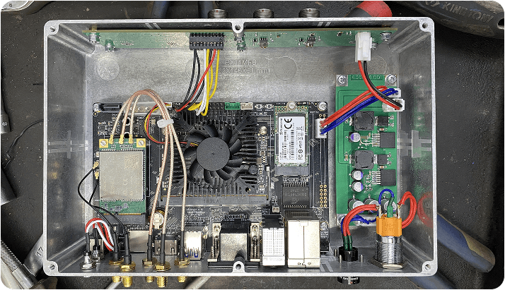
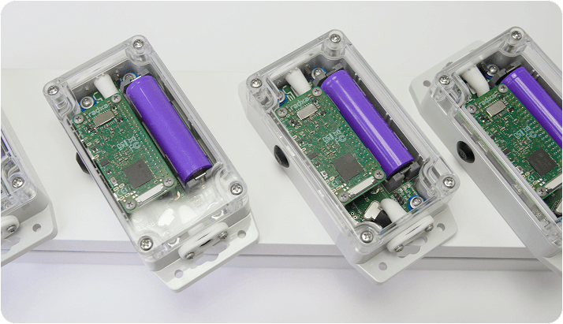
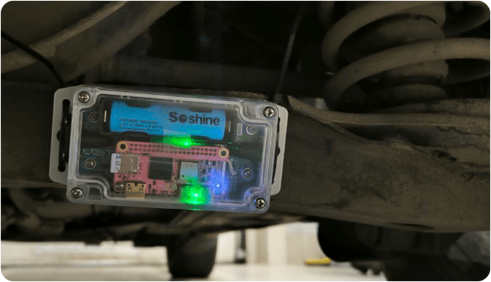

With this article, we are starting a series about V2M's evolution as a US electronics manufacturer: what it takes to design an electronic device and bring it to mass production, and how the relatively young field of AI car diagnostics drives both our technical and business decisions.
The V2M-One device wasn't always what it is today. Over more than five years of work, it evolved dramatically. In 2021, it started as a chunky metal box connected to the car's CAN interface and powered by its battery. By 2026, it had become an integrated system that recognizes car malfunctions with 90% median accuracy (compared to 65% for humans), with a field sound acquisition device that's 1/20 the size of the original and can be operated with the push of a single button.


The first version of the device was based on a Firefly Rockchip microcomputer and ran AI models onboard to process the sounds it captured. After quite a few tests and field deployments, we found that although the system was fairly self-contained and didn't need a network connection for its core functions, it had several drawbacks in real-world use:
- Complexity of the installation process: it was labor-intensive and time-consuming in a car repair shop or dealership and required on-site training by one of our specialists, which added costs for everyone involved.
- Complexity, price and fragility of the device itself.
- The need to push regular updates to the device, because we kept training the models in our cloud to improve accuracy (another interesting topic we'll cover in a separate article).
- Weight. Shipping costs were too high for mass production: with all the wiring and the active cooling system, the device weighed a whopping 2 pounds!
- The need to collect sound data to keep improving the models. So even if we kept the device offline, we still had to design and manufacture a separate networked sound acquisition solution.
All this created a lot of friction, especially for our customers: the device solved one problem for them but created others they wouldn't have had doing things the old-school way.
Based on our findings, we set priorities aimed above all at dramatically improving customer satisfaction, and these steered the device's evolution. The next generation had to be:
- Miniature.
- Autonomous.
- Protected.
- Intuitive.
This is how our main product, V2M-One, was born.
The first version of V2M-One was designed around the Mango Pi Zero single-board computer (SBC):

On one hand, it was a huge breakthrough compared to the previous approach, addressing most, if not all, of the Firefly-based version's shortcomings.
On the other hand, we opened a whole Pandora's box of new problems: vibration, charging, overheating, the harsh conditions where the box would now be installed, connection reliability, storage speed and the smartphone app's UX. But these were mostly engineering problems, and by then we had the expertise to solve them (we'll cover our technical solutions in future articles, so stay tuned!).
What we didn't anticipate: the Mango Pi Zero was suddenly discontinued, and we had to urgently redesign the device around the Radxa Zero SBC. Otherwise, we couldn't have started mass production. It was a painful illustration of a well-known business reality: downstream electronics manufacturing is volatile. Any fluctuation in upstream markets, whether raw materials or components, immediately affects the whole chain, and that's something to keep in mind when choosing partners.
We hope our journey makes for an interesting read. There's more to come, so to our updates to stay tuned.